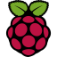

Chai Shi's Resume
MS CSIE Student at National Cheng Kung University
Summary
Fresh computer science postgraduate with strong hands-on experience in backend design, testing, linting, and provisioning. Equipped fundamental but diverse skill set such as mobile development, DevOps, IoT, and Blockchain. Passionate about software development and various technical skill.
Education
National Cheng Kung University
BS Computer Science and Information Engineering - Sep 2016 ~ Jun 2020
MS Computer Science and Information Engineering - Sep 2020 ~ Present
Work Experience
Jul 2021 ~ Oct 2021 - NextDrive - Software Engineer Intern
- Development of heatstroke alert service integrated with corporate API
- Deployed backend and frontend using reverse proxy with SSL support
- Integrate CI/CD pipeline with gitlab ci and Ansible
Mar 2020 ~ Mar 2021 - Nintingale AI - Research Assistant and Software Engineer
- Development of various Line chat bots with interactive user interface (Flex message, LIFF)
- Build BLE central gateways (RPi) for smart wrist data collection. Use Shellhub and docker to handle multiple devices orchestration and deployment
- Develop iOS and Android apps (Flutter) for smart wristband users. Handling Bluetooth events and use the DevOps pipeline (Gitlab-CI) for apps staging and publishing
- Setup blockchain private network (Ethereum geth) and built web explorer
- Research in a time-series algorithm for anomaly detection
AUG 2018 - Skymizer - Project Developer
- Implement ONNX library to help AI in edge devices
- Strengthen C language coding skills
- Master version control system (git) to collaborate with the team
- Improve problem solving skill
- Experience a day in life of a software engineer
Featured Projects
Smart Wrist Data Collection (iOS and Android)
- Use Flutter to implement multi-platform apps
- Use bluetooth to receive wristband data
- Integrate database and notification system
- Manage and publish the app
Smart Wristband Data Collection (Raspberry Pi)
- Use Raspberry Pi to receive BLE notification event
- Collect data and upload to private cloud
- Multiple IoT devices orchestration via Shellhub
- Integrated with CI/CD pipeline (Docker)
Gitlab CI  Raspberry Pi  Docker Shellhub
Docker Shellhub
Energy Trading Platform
- Backend development of green energy trading system for BEMS (Building Electric Management System)
- Implement Ethereum Smart Contract to store trading transactions
- Building Ethereum private chain using POA
Automated Ovitrap System
- Implement mosquito larvae counting automation system using IoT devices
- Leverage serverless cloud computing for event-driven jobs
- Build both frontend and backend of information system
- Addon tools to improve user experience
Certification
- AWS Certified Cloud Practitioner
- AWS Certified Solution Architect - Associate
Last Modified: 2021/11/11